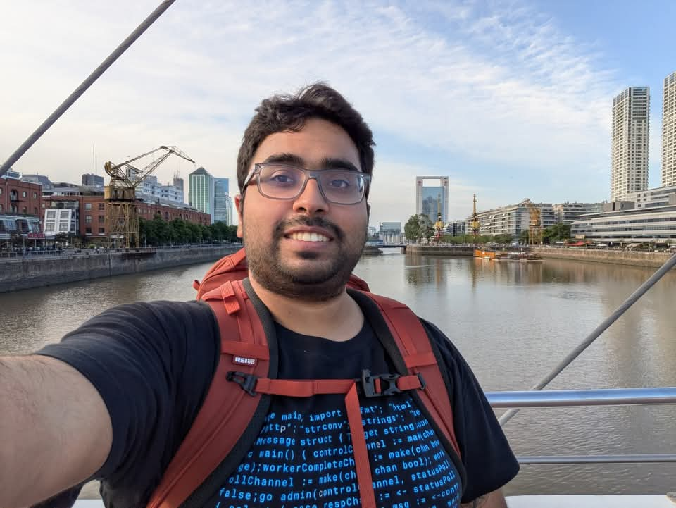
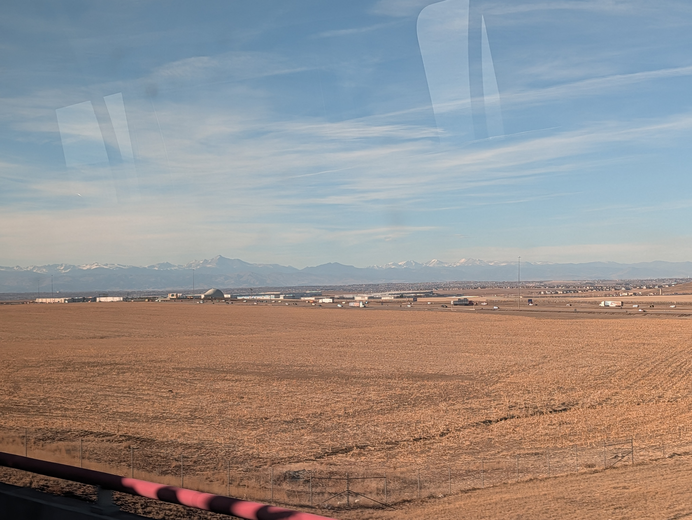
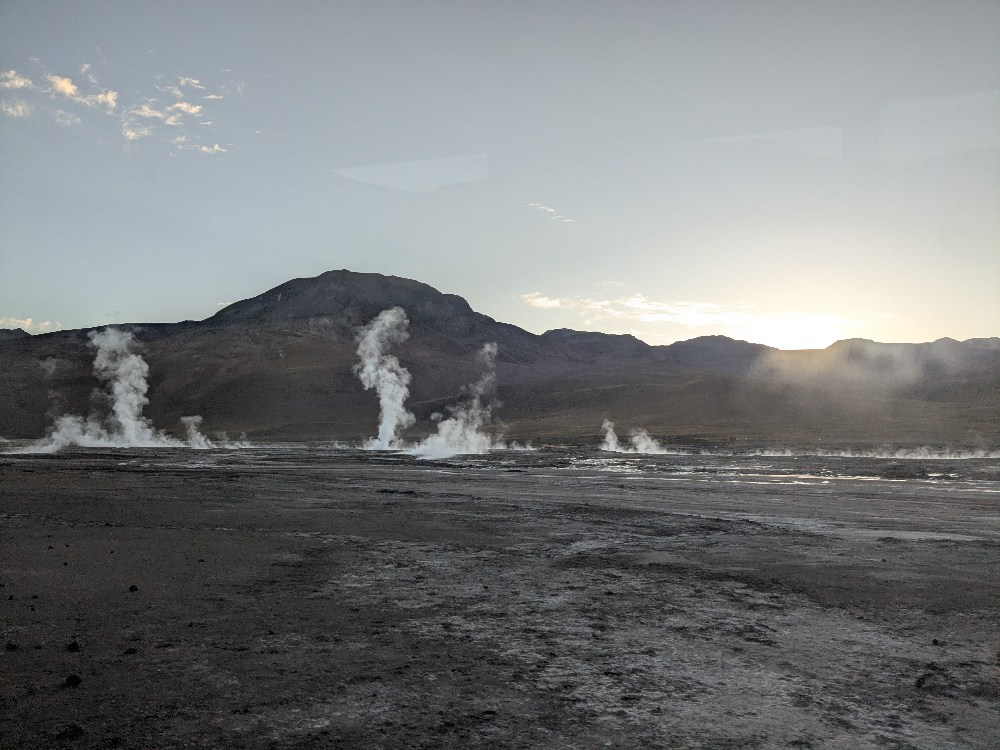
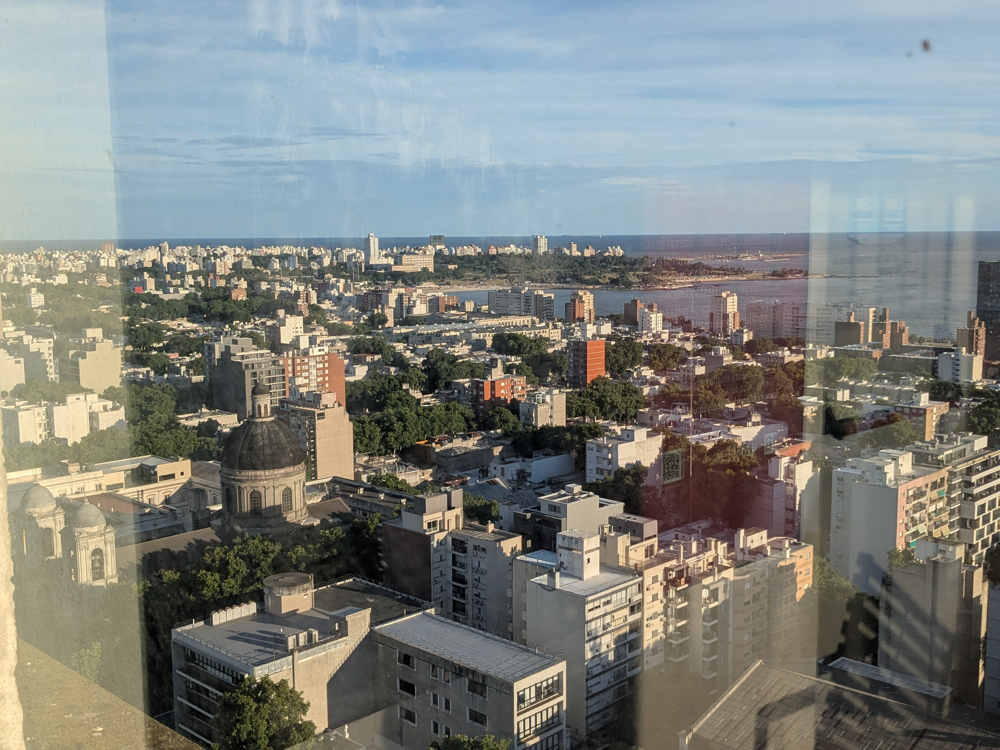
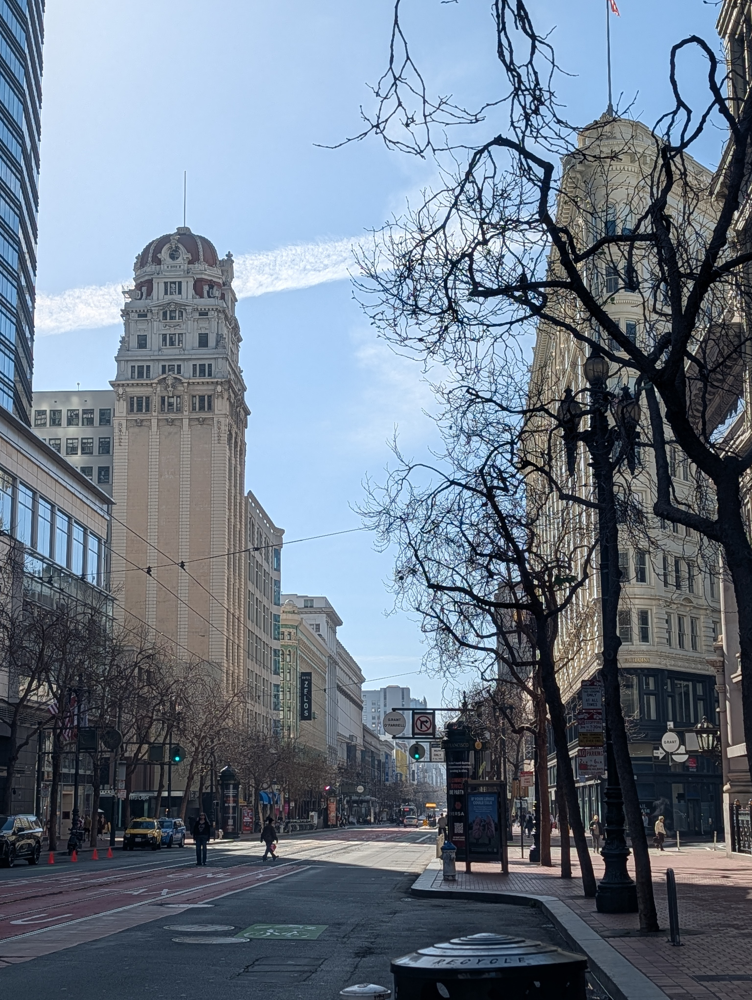
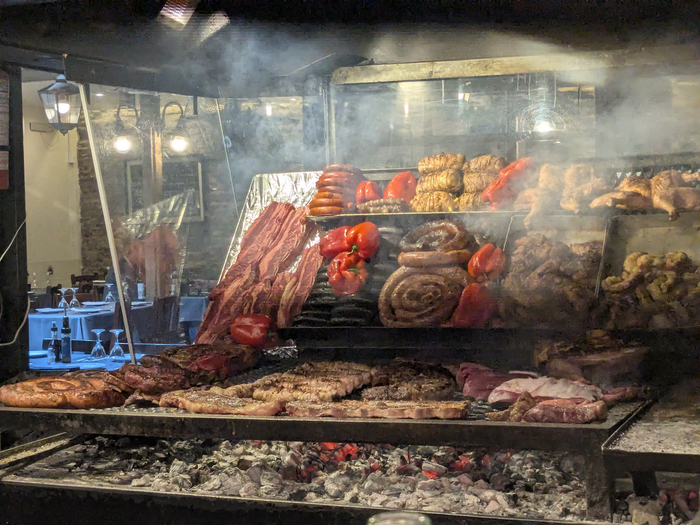

System.out.println(Hello World!)
My name is Hari Sridhar and I'm a software engineering working in sunny San Frnacisco.

Some of my past experiences include internships at the following companies back as an undergraduate student :
And full-time employment at the following companies, in order:
Outside of work, when I am not to busy or pre-occupied with other matters, I enjoy pursuing the following activities :
In terms of other side interests, I enjoy reading up on the following activities
For ways to reach out to me, click on the following external websites :
And for viewing my open source contributions and other code bases, head to the following links :
And for reach out to me via e-mail
I've been very fortunate to have had the oppurtunity to travel many different parts of the world. Here's some of my favorite places visited!
Atacama Desert

Buenos Aires
Denver

Montevideo

San Francisco

Punta Del Este
